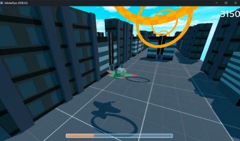
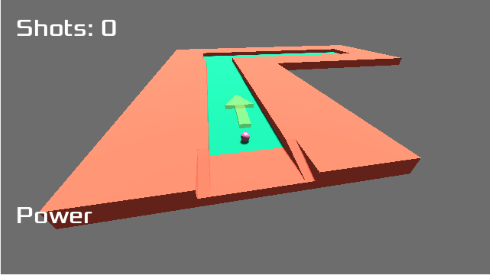
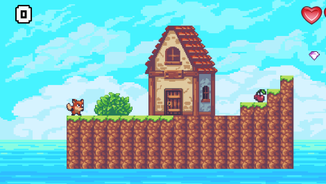

Meus Projetos
Projetos Feitos em Aula
Games

Infinite Fly
Desenvolvido na Godot. Um jogo de aviãozinho que atravessa anéis e desvia de obstáculos.
Acessar Jogo

Mini Golf
Jogo 3D desenvolvido na Godot. Um mini golfe com cenários e desafios interativos.
Acessar Jogo

Super Fox Adventure
Inspirado em Mario, este jogo criado na Godot possui fases desafiadoras e obstáculos variados.
Acessar JogoProjetos Pessoais

MiAU
PROJETO PRINCIPAL. Site para adoção segura de animais, baseada em compatibilidade e escolhas.
Acessar Projeto